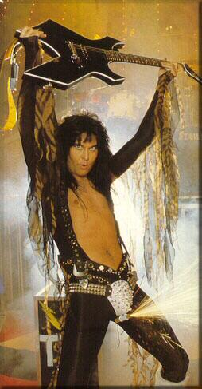

Blackie Lawless
 De: La Frikipedia, la enciclopedia extremadamente seria.
De: La Frikipedia, la enciclopedia extremadamente seria.
| De la serie cantantes del mundo:
|
| Blackie Lawless
|

|
| Blackie con cara de no haber roto un plato en su [vida
|
|
| Nombre completo
|
Negrito Sin Ley y Desamparado
|
| Estilo musical
|
Jebi
|
| Millones de fans
|
Decenas, o quizás mas
|
| ¿Toca algún instrumento?
|
El clavicornio
|
| ¿Desafina?
|
Si ha comido morcillas
|
| Popularidad
|
Bastante
|
| Se dió a conocer con
|
Se me ha muerto el canario
|
| Nacionalidad
|
La Cabra
|
| Raza
|
Microfoneador
|
| Productora
|
Varias
|
| Notas
|
Ha conseguido hacer el cubo de Rubik
|
Blackie Lawless (1972-infinito) es mayor mayormente conocido por ser el vocalista, guitarrista y compositor de la banda de WASP (We Are Sexual Perverts). Negrito sin ley ha realizado también múltiples cameos en películas de clase B y esquizofrénico, maníaco compulsivo, neuromentalaguilipollado, neurometalagilipollado (o psiquiatría clínica no ha tenido constancia, careciendo por tanto de nomenclatura (vamos, que viene completito). Ante tal cuadro no es de extrañar que incluso los lobos en el bosque hagan fuego para que Blackie Lawless no se acerque.
Origen
Blackie Lawless fue creado en 1972 por la iniciativa Dharma en la isla de GMT. Consigió huir empleando para la fuga un destornillador de estrella y una llave allen del 15. Después de una travesía de 3 meses (nadando en círculos mayormente) logró llegar a las costas californianas, negando por tanto dicha proeza a David Meca.
Carrera
Blackie y sus amigotes de We Are Sexual Perverts un viernes
noche cualquiera
 Blackie Lawless en estado elemental
Blackie Lawless funda en 1982 el grupo musical WASP. Inicialmente constituido por el propio Blackie, Rik Fox, Randy Piper y World Champion (no se sabe de que). El grupo se vió truncado al poco tiempo como consecuencia de las tendencias homicidas de Blackie tanto dentro como fuera del escenario. Entre los diferentes integrantes que se han ido sucediendo en la banda cabe destacar al bajista kazajo Benito Camela, el batería puertorriqueño Lecherous Maximus o el famoso guitarrista y tenista Carlos Santillana.
En la historia de WASP pueden distinguirse claramente dos etapas. Entre 1982-1995 la banda se caracteriza por una puesta en escena provocativa y perversiva, haciéndose frecuente el empleo de artilugios de tortura medieval sobre el escenario. Es a partir de 1995 cuando bajo la influencia de una supuesta inspiración adivina, Blackie se convierte al necronomiconismo o culto al Still Not Black Enough (1995) supone un punto de inflexión en la trayectoria de la banda. Se dice que Blackie compuso los 11 temas del álbum más los dos bonus ocultos durante un período de autorecogimiento de dos años en los Cerros de Úbeda. A Still Not Black Enough le seguirán auténticas joyas del Unholy Terror (2001), disco de hojalata con 7 copias vendidas, o Kill Fuck Die (1997), en el que destaca el single Fuck like a Beast, el clásico por excelencia en todas y cada una de las actuaciones en directo de la banda.
Hechos sobre Blackie Lawless
- Blackie ha entrado en el Libro Guinness de los Récords por haberse follado todos los modelos de lavadoras con carga frontal del mercado hasta la fecha.
- Blackie fue declarado inocente sin cargos en el juicio por la muerte del bajista del grupo, Rik Fox, durante un concierto en Woodstock. A pesar de que el video del concierto muestra claramente como Balckie le asestó un total de 137 golpes, empleando para ello dos guitarras, un bajo y un soporte para micro, se acabó considerando que Rik fue víctima de un lamentable accidente laboral, al estimarse que falleció en el acto al recibir el impacto del primer guitarrazo.
- Blackie Lawless cuenta con la paternidad reconocida de 97 hijos, así como 4 orangutanes, 19 caballos, 567 ovejas, 7 perros labradores y un Hasky, un oso pardo, dos osos polares, 32 hámsters y un número indeterminado de tortugas gigantes.
- Blackie Lawless no utiliza micrófono en sus actuaciones. Es capaz de sobrepasar los 140 dB a pulmón libre, llegando así al umbral del dolor.
Hechos falsos sobre Blackie Lawless
Blackie a la hora del jayuyo
- Blackie Lawless no es calvo y, por tanto, sus greñas características no son de pega. Cierto es que su adicción en el pasado a la Saldeva le causó desordenes metabólicos de consideración, pero no hasta el punto de eliminar todo rastro de bello corporal.
- Blackie es la única estrella del Rock que no ha consumido nunca drogas. Esto es totalmente falso, puesto que ha participado en dos ediciones del Tour de Francia.
- A pesar de que se ha apuntado una posible relación de parentesco entre Blackie Lawless y Jack Black (más conocido como Jack Black, protagonista y director de Tenaciuos D), es altamente improbable que así sea, puesto que Blackie no tiene familia. No obstante no puede descartarse dicha posibilidad, ya que Jack Black también es fruto de la isla de Perdidos.
- Blackie Lawless murió en una accidente de tráfico en 1992 mientras conducia ebrio un Porsche Carrera 991, en contradireción por la M30 a la altura del Jardincillo Virgen de la Roca, colisionando con una camión cisterna Cepsa cargado. Esto es parcialmente falso. Lo cierto es que Blackie logró sobrevivir al accidente y la consecuente deflagación causada por la explosión. No corrieron la misma suerte un total de 138 víctimas. A diferencia de Farruquito, nuevamente Lawless fue declarado inocente y libre de cargos en el juicio.
Frases célebres
- "Sólo conozco una manera viable de follarse un hámster: envolver al bicho con cinta aislante, evitando así que rebiente."
- "Desde siempre he necesitado como mínimo frotármela contra una pared rugosa, empleando en el proceso las dos manos. Un claro ejemplo de falta de sensibilidad" (En una entrevista para el canal infantil Disney Channel.)
- "La única diferencia entre lástima y lastima es el tamaño."
- "Como todo el mundo sabe, de la unión de una ternero que se ordeña sólo."
- "La sexual."
- "os diré que quiere decir W.A.S.P, nada de White Anglo-Saxon and Protestant ni tampoco We Are Sexual Perverts (ojalá se me hubiera venido antes ese título a la cabeza), tampoco We are Satanic People, aunque me gustó cuando dije a un periodista We Ain't Sure, Pal. En realidad era para hacer un poco de broma, aunque al final sonaba bien y lo dejamos. Por eso no queríamos decir el significado, porque es realmente no tiene sentido: We Are Stupid People. Por eso no queríamos decir el significado."
Discografía
- Face the Attack (1982)
- WASP (1984)
- The Last Command (1985)
- Inside the Electric Circus (1986)
- The Headless Children (1989)
- The Crimson Idol (1992)
- Still Not Black Enough (1995)
- Kill Fuck Die (1997)
- Helldorado (1999)
- Unholy Terror (2001)
- Dying for the World (2002)
- The Neon God: Part 1 - The Rise (2004)
- The Neon God: Part 2 - The Demise (2004)
- Dominator (2007)
Filmografía
- Arma Rectal
- Cabalgando A Miss Daisy
- El Club de la Ducha
- El Cid Porculeador
- El Silencio De Los Conejos
- Hard Cipotter
- La Banana Mecánica
- Más Adentro
- Pulp Friction
- Sodomiza Como Puedas
- Sperman
- Memorias de un Homo Erectus
Autor(es):
- Krusher
- Nexo
- Pzkw
- Frikih
- AntiFriki
- Cibercrank
- ArreKarallo
- MuXeD
- Harry El del Pote
- El príncipe de las tabernas
Frikipedia 2005-2016, Licencia
GFDL 1.2 - Extraído por FrikiLeaks